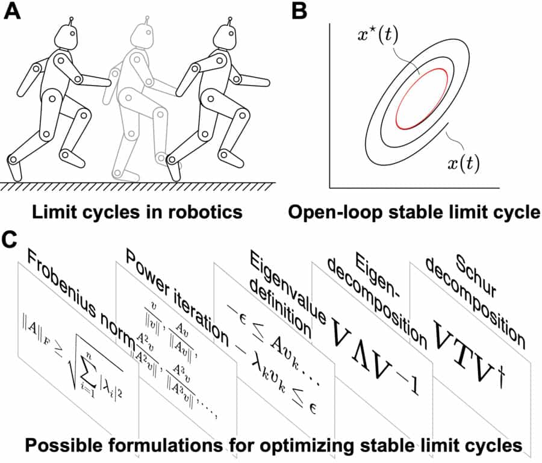

Optimization of Open-loop Stable Limit Cycles with Direct Collocation and Smooth, Symbolic Derivatives
Open-loop stable limit cycles are foundational to the dynamics of legged robots. They impart a self-stabilizing character to the robot's gait, thus alleviating the need for compute-heavy feedback-based gait correction. This paper proposes a general approach to rapidly generate limit cycles with explicit stability constraints for a given dynamical system. In particular, we pose the problem of open-loop limit cycle stability as a single-stage constrained-optimization problem (COP), and use Direct Collocation to transcribe it into a nonlinear program (NLP) with closed-form expressions for constraints, objectives, and their gradients. The COP formulations of stability are developed based (1) on the spectral radius of a discrete return map, and (2) on the spectral radius of the system's monodromy matrix, where the spectral radius is bounded using different constraint-satisfaction formulations of the eigenvalue problem. We compare the performance and solution qualities of each approach, but specifically highlight the Schur decomposition of the monodromy matrix as a formulation which boasts wider applicability through weaker assumptions and attractive numerical convergence properties. Moreover, we present results from our experiments on a spring-loaded inverted pendulum model of a robot, where our method generated actuation trajectories for open-loop stable hopping in under 2 seconds (on the Intel Core i7-6700K), and produced energy-minimizing actuation trajectories even under tight stability constraints.